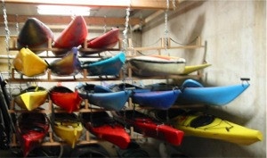
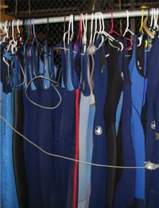
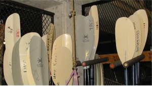
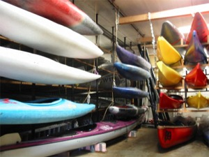

|
return to UKC index |
Equipment
Gasket Replacement
see also:
For a typical day trip, all you'll need to bring of your own is clothes and lunch, plus a few dollars for a driver donation if you're going on an official club trip and aren't driving a car. For overnight trips, you'll need your own sleeping bag and tent as well.
Before going on a whitewater trip, you may want to refer to the list of things to bring on a whitewater trip. For sea trips, refer to the list of things to take on a sea trip.
The kayak club has an excellent safety record and devotes considerable effort to keeping club operations safe. Additional equipment is available to club trip leaders for use when leading official club trips, including first aid kits, throwlines, charts, deck compasses, and a VHF radio.
 All equipment use is restricted, without exception, to current club members. Club equipment cannot be loaned to friends or family, nor can non-members share the double kayaks with a club member.
If you lose or damage equipment beyond the course of normal wear and tear, you can expect you will have to replace or repair it. If you notice problems with club equipment, let the club's equipment manager know about them.
To take a boat out on Lake Washington, this is all you need to do:
If you are paddling late in the day, be sure to return before the WAC closes. If you are going to be paddling for several hours, it's wise to check the weather forecast beforehand so you can be properly prepared. Weather in Seattle is fairly predictable, but can still change suddenly if a front is coming through.

The kayak club's equipment is used heavily, and therefore requires regular maintenance.
To make sure maintenance is done, and to make other improvements to club property, work parties are scheduled
regularly. Typically, there's one every quarter.
As an incentive for participation, those attending work parties are added to the list of Club Saints and given priority when signing up for club trips. To foster an atmosphere of conviviality, the club also supplies pizza and beverages at work parties. Usually we have quite a load of fun.
Instructions for replacing gaskets can be found on Kokotat's web site. Make sure you get the correct gasket for the top. The club owns Kokotat and Stohlquist dry tops. George at Sea Kayak Academy will sell gaskets for our tops at a club discount.
| Equipment / UKC Webmasters ukc-web@u.washington.edu
photos by Mike Wagenbach |
last updated: 2002.11.9 |